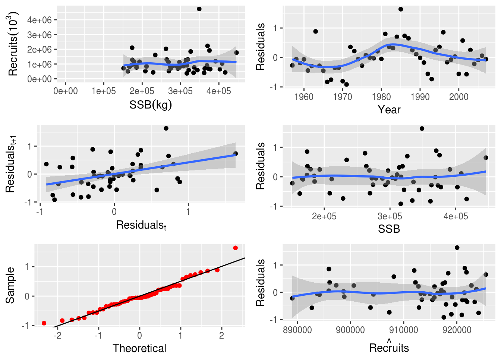
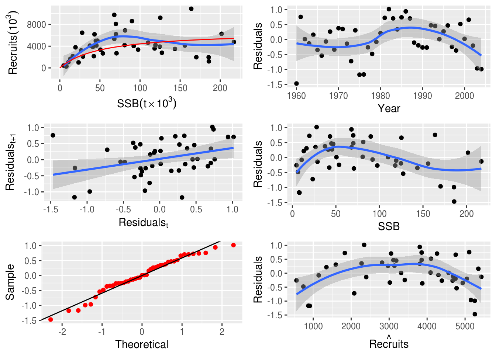
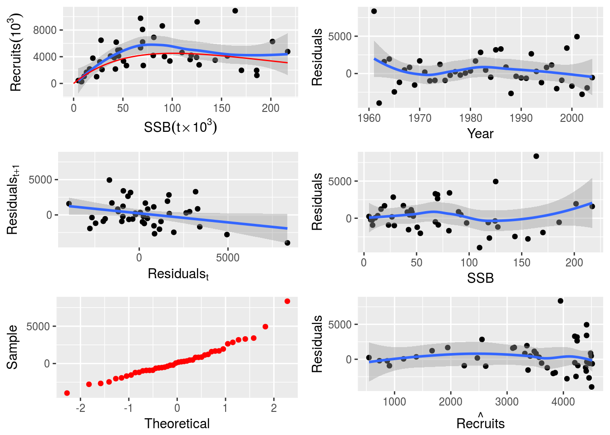

Modelling Stock-Recruitment with FLSR
08 March, 2017
FLSR is a S4 class for Stock-Recruitment (SR) models, an extension of FLModel , and part of the FLCore package. Commonly used or custom-tailored SR models can be fitted directly on FLStock objects and provide estimates of uncertainty. FLSR class objects can be then used to visualize the fitted models, in calculations of biological reference points using FLBPR or when performing stock projections.
Required packages
To follow this tutorial you should have installed the following packages:
You can do so as follows,
install.packages(c("ggplot2"))
install.packages(c("FLCore"), repos="http://flr-project.org/R")
install.packages(c("ggplotFL"), repos="http://flr-project.org/R")Initially, the libraries need to be called.
# This chunk loads all necessary packages, trims pkg messages
library(FLCore)
library(ggplotFL)And then the user can load and visualize the results of an assessment (VPA) already performed and stored in the ple4 FLStock object.
# This chunk loads the ple4 FLStock object
data(ple4)# This chunk plots the assesment output
plot(ple4)
The Stock-Recruitment (SR) relationship
Given that recruitment and spawning stock biomass (SSB) are provided as an output of the assessment, their relationship can be visualized simply by ploting the recruits against the SSB.
# This chunk plots the SSB-Recruits graph
#plot(FLQuants(ple4, "ssb", "rec"))
ggplot(aes(ssb,rec), data=model.frame(FLQuants(ple4, "ssb", "rec")))+geom_point()+geom_smooth()
Working with FLSR objects
An empty FLSR object can be directly created simply by:
# This chunk creates an empty FLSR object
sr1 <- FLSR()An FLSR object can be also be created from converting directly an FLStock object:
# This chunk converts an FLStock object into an FLSR object
p4sr <- as.FLSR(ple4)The contents of the FLSR object are the following:
# This chunk outputs the summary of the FLSR object
summary(p4sr)An object of class "FLSR"
Name: Plaice in IV
Description: 'rec' and 'ssb' slots obtained from a 'FLStock' object
Quant: age
Dims: age year unit season area iter
1 51 1 1 1 1
Range: min minyear max maxyear
1 1958 1 2008
rec : [ 1 51 1 1 1 1 ], units = 10^3
ssb : [ 1 51 1 1 1 1 ], units = kg
residuals : [ 1 51 1 1 1 1 ], units = NA
fitted : [ 1 51 1 1 1 1 ], units = 10^3
Model: list()
<environment: 0xa476548>
Parameters:
params
iter
1
Log-likelihood: NA(NA)
Variance-covariance: <0 x 0 matrix>In the case of ple4 data, recruits are fish of age=1. Hence, the lag between ssb and rec is also 1 year. The starting year for SSB is 1957, whereas for recruits it is 1958.
# This chunk outputs the contents of the rec and ssb slots of the FLSR object
ssb(p4sr)[,1]An object of class "FLQuant"
An object of class "FLQuant"
, , unit = unique, season = all, area = unique
year
age 1957
all 274205
units: kg rec(p4sr)[,1]An object of class "FLQuant"
An object of class "FLQuant"
, , unit = unique, season = all, area = unique
year
age 1958
1 698110
units: 10^3 The default recruitment age in FLSR is age=1. However, the user can change this by triming the FLStock object while converting it into an FLSR object:
# This chunk shows how to set a different recruitment age than the default,
# e.g. set the recruitment age at age=2
# this can be done by trimming the FLStock object as follows
p4sr2 <-as.FLSR(ple4[-1])In this case, the lag between ssb and rec is 2 years. The starting year for SSB is 1957, whereas for recruits it is 1959.
# Note the shift in years, reflecting that recruitment is now at age 2
ssb(p4sr2)[,1]An object of class "FLQuant"
An object of class "FLQuant"
, , unit = unique, season = all, area = unique
year
age 1957
all 274205
units: kg rec(p4sr2)[,1]An object of class "FLQuant"
An object of class "FLQuant"
, , unit = unique, season = all, area = unique
year
age 1959
2 568706
units: 10^3 Fitting a SR model
To fit a SR model a series of commonly-used stock-recruitment models are already available, including the corresponding likelihood functions and calculation of initial values. See SRModels for more details and the exact formulation implemented for each of them. Each method is defined as a function returning a list with one or more elements as follows:
modelFormula for the model, using the slot names (rec and ssb) to refer to the usual inputs.
loglFunction to calculate the loglikelihood of the given model when estimated through Maximum Likelihood Estimation (MLE, see fmle).
initialFunction to provide initial values for all parameters to be minimization algorithms called by fmle or nls. If required, this function also have two attributes, lower and upper, that give lower and upper limits for the parameter values, respectively. This is used by some of the methods defined in optim, like “L-BFGS-B”. The model <– method for FLModel can then be called with value being a list thus described, the name of the function returning such a list, or the function itself.
The available SR models are: bevholt(), bevholt.ar1(), bevholt.c.a(), bevholt.c.b(), bevholt.d(), bevholt.ndc(), bevholt.sv(), geomean(), logl.ar1(rho, sigma2, obs, hat), ricker(), ricker.ar1(), ricker.c.a(), ricker.c.b(), ricker.d(), ricker.sv(), segreg(), shepherd(), shepherd.ar1(), shepherd.d(), shepherd.d.ar1(), shepherd.ndc(), shepherd.ndc.ar1(), sv2ab(steepness, vbiomass, spr0, model).
The user can assign a Ricker SR model to the FLStock object. The user can also obtain the model formula of the fitted model, as well as the log-likelihood. The fmle method fits the model specified in an FLModel object using R’s optim function to minimize the negative of the log-likelihood function, in the logl slot, through calls to the minimizaton routine. The default algorithm for optim is Nelder-Mead, however other options are available (e.g. “L-BFGS-B”, see ?optim).
# This chunk assigns a Ricker SR model and fits it
model(p4sr) <- ricker()
model(p4sr)rec ~ a * ssb * exp(-b * ssb)
<environment: 0xfd64940># the fmle method then fits the SR model using logl and R's optim model fitting through MLE
p4sr<-fmle(p4sr) Nelder-Mead direct search function minimizer
function value for initial parameters = -21.363701
Scaled convergence tolerance is 3.18344e-07
Stepsize computed as 0.916257
BUILD 3 10000000000000000159028911097599180468360808563945281389781327557747838772170381060813469985856815104.000000 -21.363701
SHRINK 7 10000000000000000159028911097599180468360808563945281389781327557747838772170381060813469985856815104.000000 -21.363701
SHRINK 11 10000000000000000159028911097599180468360808563945281389781327557747838772170381060813469985856815104.000000 -21.363701
SHRINK 15 10000000000000000159028911097599180468360808563945281389781327557747838772170381060813469985856815104.000000 -21.363701
SHRINK 19 10000000000000000159028911097599180468360808563945281389781327557747838772170381060813469985856815104.000000 -21.363701
SHRINK 23 10000000000000000159028911097599180468360808563945281389781327557747838772170381060813469985856815104.000000 -21.363701
SHRINK 27 10000000000000000159028911097599180468360808563945281389781327557747838772170381060813469985856815104.000000 -21.363701
SHRINK 31 10000000000000000159028911097599180468360808563945281389781327557747838772170381060813469985856815104.000000 -21.363701
SHRINK 35 10000000000000000159028911097599180468360808563945281389781327557747838772170381060813469985856815104.000000 -21.363701
SHRINK 39 10000000000000000159028911097599180468360808563945281389781327557747838772170381060813469985856815104.000000 -21.363701
HI-REDUCTION 41 298.701908 -21.363701
HI-REDUCTION 43 263.351655 -21.363701
HI-REDUCTION 45 228.002195 -21.363701
HI-REDUCTION 47 192.655949 -21.363701
HI-REDUCTION 49 157.322617 -21.363701
HI-REDUCTION 51 122.040982 -21.363701
HI-REDUCTION 53 86.964680 -21.363701
HI-REDUCTION 55 52.683513 -21.363701
HI-REDUCTION 57 21.213301 -21.363701
HI-REDUCTION 59 -2.719834 -21.363701
HI-REDUCTION 61 -15.283622 -21.363701
HI-REDUCTION 63 -19.703632 -21.363701
HI-REDUCTION 65 -20.939051 -21.363701
HI-REDUCTION 67 -21.257181 -21.363701
HI-REDUCTION 69 -21.337183 -21.363701
HI-REDUCTION 71 -21.357145 -21.363701
HI-REDUCTION 73 -21.362100 -21.363701
HI-REDUCTION 75 -21.363319 -21.363701
HI-REDUCTION 77 -21.363614 -21.363701
HI-REDUCTION 79 -21.363683 -21.363701
HI-REDUCTION 81 -21.363697 -21.363701
HI-REDUCTION 83 -21.363698 -21.363701
HI-REDUCTION 85 -21.363700 -21.363701
HI-REDUCTION 87 -21.363700 -21.363701
Exiting from Nelder Mead minimizer
89 function evaluations used# log-likelihood
# logl(p4sr)The user can extract the initial parameters used by the optimiser, as well as the lower and upper limits of these parameters.
# initial values for the optimiser
initial(p4sr)function (rec, ssb)
{
res <- coefficients(lm(log(c(rec)/c(ssb)) ~ c(ssb)))
return(FLPar(a = max(exp(res[1])), b = -max(res[2])))
}
<environment: 0xfd64940>
attr(,"lower")
[1] -Inf -Inf
attr(,"upper")
[1] Inf Inf# lower and upper limits for the parameters
lower(p4sr)[1] -Inf -Infupper(p4sr)[1] Inf InfDiagnostic plots can be produced by simply calling the /plot/ function on the FLSR object.
# Diagnostics plots of the fitted SR model
plot(p4sr)
NS Herring stock-recruitment dataset example
The user can experiment with North Sea herring data where a Ricker model has already been fitted.
# This chunk loads, plots and prints a summary of the nsher FLSR object
# (a ricker SR model has already been fitted)
data(nsher)
plot(nsher)
summary(nsher)An object of class "FLSR"
Name:
Description:
Quant: age
Dims: age year unit season area iter
1 45 1 1 1 1
Range: min minyear max maxyear
0 1960 0 2004
rec : [ 1 45 1 1 1 1 ], units = 10^3
ssb : [ 1 45 1 1 1 1 ], units = t*10^3
residuals : [ 1 45 1 1 1 1 ], units = NA
fitted : [ 1 45 1 1 1 1 ], units = 10^3
Model: rec ~ a * ssb * exp(-b * ssb)
<environment: 0xb582bd0>
Parameters:
params
iter a b
1 119.4 0.009451
Log-likelihood: 15.862(0)
Variance-covariance:
a b
a 255.33882 1.809e-02
b 0.01809 1.993e-06The user can change the fitted SR model if so desired. Below bevholt() and cushing() models are used.
# This chunk fits and plots a bevholt SR model and a cushing SR model on nsher data
#assign nsher with ricker model to a new object
nsher_ri <- nsher
# change model to bevholt
model(nsher) <- bevholt()
# fit through MLE
nsher_bh <- fmle(nsher) Nelder-Mead direct search function minimizer
function value for initial parameters = -10.336211
Scaled convergence tolerance is 1.54022e-07
Stepsize computed as 501.110000
BUILD 3 44.842344 -11.603908
HI-REDUCTION 5 31.685209 -11.603908
HI-REDUCTION 7 17.913114 -11.603908
HI-REDUCTION 9 5.415279 -11.603908
HI-REDUCTION 11 -3.412974 -11.603908
HI-REDUCTION 13 -8.018030 -11.603908
LO-REDUCTION 15 -10.336211 -11.603908
LO-REDUCTION 17 -11.081040 -11.603908
EXTENSION 19 -11.295930 -12.061705
LO-REDUCTION 21 -11.603908 -12.061705
REFLECTION 23 -11.813826 -12.087620
REFLECTION 25 -12.061705 -12.199591
LO-REDUCTION 27 -12.087620 -12.199591
LO-REDUCTION 29 -12.158184 -12.199591
LO-REDUCTION 31 -12.191726 -12.199591
HI-REDUCTION 33 -12.192269 -12.199591
HI-REDUCTION 35 -12.197784 -12.199591
LO-REDUCTION 37 -12.198015 -12.199591
HI-REDUCTION 39 -12.199555 -12.199776
REFLECTION 41 -12.199591 -12.200058
HI-REDUCTION 43 -12.199776 -12.200092
HI-REDUCTION 45 -12.200058 -12.200142
HI-REDUCTION 47 -12.200092 -12.200155
HI-REDUCTION 49 -12.200142 -12.200160
HI-REDUCTION 51 -12.200155 -12.200177
HI-REDUCTION 53 -12.200160 -12.200177
LO-REDUCTION 55 -12.200171 -12.200179
HI-REDUCTION 57 -12.200177 -12.200179
HI-REDUCTION 59 -12.200178 -12.200179
HI-REDUCTION 61 -12.200179 -12.200179
HI-REDUCTION 63 -12.200179 -12.200179
HI-REDUCTION 65 -12.200179 -12.200179
Exiting from Nelder Mead minimizer
67 function evaluations used# change model to cushing
model(nsher) <- cushing()
# fit through MLE
nsher_cs <- fmle(nsher) Nelder-Mead direct search function minimizer
function value for initial parameters = 2.643728
Scaled convergence tolerance is 3.93946e-08
Stepsize computed as 7.305886
BUILD 3 165.749466 2.643728
LO-REDUCTION 5 132.833288 2.643728
HI-REDUCTION 7 100.600604 2.643728
HI-REDUCTION 9 67.664549 2.643728
HI-REDUCTION 11 34.733185 2.643728
HI-REDUCTION 13 7.911548 2.643728
HI-REDUCTION 15 4.521431 -1.878950
LO-REDUCTION 17 2.643728 -1.878950
HI-REDUCTION 19 -0.979191 -1.878950
HI-REDUCTION 21 -1.703436 -1.878950
EXTENSION 23 -1.799779 -2.563273
LO-REDUCTION 25 -1.878950 -2.563273
EXTENSION 27 -2.224734 -3.314794
LO-REDUCTION 29 -2.563273 -3.314794
EXTENSION 31 -3.066239 -4.172130
EXTENSION 33 -3.314794 -4.839079
EXTENSION 35 -4.172130 -5.749640
LO-REDUCTION 37 -4.839079 -5.749640
HI-REDUCTION 39 -5.330663 -5.749640
LO-REDUCTION 41 -5.399427 -5.749640
EXTENSION 43 -5.660976 -6.024063
HI-REDUCTION 45 -5.749640 -6.024063
EXTENSION 47 -5.858861 -6.325684
LO-REDUCTION 49 -6.024063 -6.325684
EXTENSION 51 -6.188183 -6.571603
EXTENSION 53 -6.325684 -6.841173
EXTENSION 55 -6.571603 -7.008862
REFLECTION 57 -6.841173 -7.107980
LO-REDUCTION 59 -7.008862 -7.107980
LO-REDUCTION 61 -7.093943 -7.133055
HI-REDUCTION 63 -7.107980 -7.141163
LO-REDUCTION 65 -7.133055 -7.142445
HI-REDUCTION 67 -7.141163 -7.143281
HI-REDUCTION 69 -7.142445 -7.143809
HI-REDUCTION 71 -7.143281 -7.144162
HI-REDUCTION 73 -7.143809 -7.144383
LO-REDUCTION 75 -7.144162 -7.144383
HI-REDUCTION 77 -7.144314 -7.144404
LO-REDUCTION 79 -7.144383 -7.144447
HI-REDUCTION 81 -7.144404 -7.144447
HI-REDUCTION 83 -7.144447 -7.144452
HI-REDUCTION 85 -7.144447 -7.144455
HI-REDUCTION 87 -7.144452 -7.144455
HI-REDUCTION 89 -7.144455 -7.144457
HI-REDUCTION 91 -7.144455 -7.144457
LO-REDUCTION 93 -7.144457 -7.144457
HI-REDUCTION 95 -7.144457 -7.144457
LO-REDUCTION 97 -7.144457 -7.144457
HI-REDUCTION 99 -7.144457 -7.144457
Exiting from Nelder Mead minimizer
101 function evaluations usedOne can inspect the fits visually,
# this chunk plots the fits from the 3 different SR models
plot(nsher_ri)
plot(nsher_bh)
plot(nsher_cs)
by using the AIC,
# this chunk plots the fits from the 3 different SR models
print(paste0('Ricker: ',round(AIC(nsher_ri),4),' ',
'Beverton-Holt: ',round(AIC(nsher_bh),4),' ',
'Cushing: ',round(AIC(nsher_cs),4)))[1] "Ricker: -27.7245 Beverton-Holt: -20.4004 Cushing: -10.2889"or Schwarz’s Bayesian Information Criterion
# this chunk plots the fits from the 3 different SR models
print(paste0('Ricker: ',round(BIC(nsher_ri),4),' ',
'Beverton-Holt: ',round(BIC(nsher_bh),4),' ',
'Cushing: ',round(BIC(nsher_cs),4)))[1] "Ricker: -24.1112 Beverton-Holt: -16.787 Cushing: -6.6756"Additionally, a profiling of the model parameters can be visualized for each fitted model.
# Profile the likelihood to check the fit
par(mfrow=c(1,3))
profile(nsher_ri)
profile(nsher_bh)
profile(nsher_cs)
SR model parameters can also be fixed. In this case, steepness is fixed to a value of 0.8. Details on the model parameterization can be found in SRmodels.
# Fit a bevholtSV model with fixed steepness at 0.8
par(mfrow=c(1,1))
model(p4sr) <- bevholtSV
p4sr <- fmle(p4sr, fixed = list(s = 0.8)) Nelder-Mead direct search function minimizer
function value for initial parameters = -21.555680
Scaled convergence tolerance is 3.21205e-07
Stepsize computed as 57698.729975
BUILD 3 138.239783 -21.555680
HI-REDUCTION 5 134.971658 -21.555680
HI-REDUCTION 7 131.535838 -21.555680
HI-REDUCTION 9 127.881431 -21.555680
HI-REDUCTION 11 123.961309 -21.555680
HI-REDUCTION 13 119.724583 -21.555680
HI-REDUCTION 15 115.111062 -21.555680
HI-REDUCTION 17 110.045701 -21.555680
HI-REDUCTION 19 104.431766 -21.555680
HI-REDUCTION 21 98.141556 -21.555680
HI-REDUCTION 23 91.003478 -21.555680
HI-REDUCTION 25 82.784736 -21.555680
HI-REDUCTION 27 73.171495 -21.555680
HI-REDUCTION 29 61.758606 -21.555680
HI-REDUCTION 31 48.093801 -21.555680
HI-REDUCTION 33 31.909759 -21.555680
HI-REDUCTION 35 13.835912 -21.555680
HI-REDUCTION 37 -3.319845 -21.555680
HI-REDUCTION 39 -15.017575 -21.555680
HI-REDUCTION 41 -20.031655 -21.555680
HI-REDUCTION 43 -20.760888 -21.555680
HI-REDUCTION 45 -21.372072 -21.555680
HI-REDUCTION 47 -21.422166 -21.555680
HI-REDUCTION 49 -21.523998 -21.555680
HI-REDUCTION 51 -21.537566 -21.555680
HI-REDUCTION 53 -21.548170 -21.555680
REFLECTION 55 -21.552329 -21.557356
EXTENSION 57 -21.555680 -21.564655
EXTENSION 59 -21.557356 -21.569964
EXTENSION 61 -21.564655 -21.594889
LO-REDUCTION 63 -21.569964 -21.594889
EXTENSION 65 -21.590236 -21.626546
LO-REDUCTION 67 -21.594889 -21.626546
LO-REDUCTION 69 -21.605773 -21.633123
HI-REDUCTION 71 -21.620052 -21.633123
LO-REDUCTION 73 -21.626546 -21.633123
LO-REDUCTION 75 -21.631055 -21.633123
EXTENSION 77 -21.632799 -21.636830
LO-REDUCTION 79 -21.633123 -21.636830
REFLECTION 81 -21.635481 -21.637874
HI-REDUCTION 83 -21.636830 -21.637874
EXTENSION 85 -21.637041 -21.639180
HI-REDUCTION 87 -21.637874 -21.639180
LO-REDUCTION 89 -21.638130 -21.639180
EXTENSION 91 -21.638504 -21.639587
REFLECTION 93 -21.639180 -21.639887
LO-REDUCTION 95 -21.639587 -21.640005
HI-REDUCTION 97 -21.639887 -21.640005
HI-REDUCTION 99 -21.639933 -21.640005
HI-REDUCTION 101 -21.639993 -21.640005
LO-REDUCTION 103 -21.640003 -21.640015
HI-REDUCTION 105 -21.640005 -21.640017
HI-REDUCTION 107 -21.640015 -21.640017
LO-REDUCTION 109 -21.640017 -21.640018
HI-REDUCTION 111 -21.640017 -21.640019
Exiting from Nelder Mead minimizer
113 function evaluations usedplot(p4sr)
params(p4sr)An object of class "FLPar"
params
s v spr0
8.0000e-01 1.4400e+05 1.6247e-01
units: NA Custom SR models can be implemented. To define a new model requires the specification of it´s i) functional form, ii) likelihood iii) bounds and iv) starting values. For example, the user can fit the Deriso-Schnute model below.
# Fit a custom SR model (Deriso Schnute)
dersch<-function(){
logl <- function(a,b,c,rec,ssb) {
res<-loglAR1(log(rec), log(a*ssb*(1-b*c*ssb)^(1/c)))
return(res)
}
## initial parameter values
initial <- structure(function(rec, ssb){
slopeAt0 <- max(quantile(c(rec)/c(ssb), 0.9, na.rm = TRUE))
maxRec <- max(quantile(c(rec), 0.75, na.rm = TRUE))
## Bevholt by default c=-1
return(FLPar(a=slopeAt0, b=1/maxRec, c=-1))},
lower=rep(-Inf, 3),
upper=rep( Inf, 3))
model <- rec~a*ssb*(1-b*c*ssb)^(1/c)
return(list(logl = logl, model = model, initial = initial))}
model(nsher)<-dersch()
nsher_dersch<-fmle(nsher,fixed=list(c=-1)) Nelder-Mead direct search function minimizer
function value for initial parameters = 17.333408
Scaled convergence tolerance is 2.58288e-07
Stepsize computed as 13.153756
BUILD 3 91.201914 17.333408
HI-REDUCTION 5 85.346515 17.333408
HI-REDUCTION 7 78.788974 17.333408
HI-REDUCTION 9 71.274855 17.333408
HI-REDUCTION 11 62.476925 17.333408
HI-REDUCTION 13 51.941338 17.333408
HI-REDUCTION 15 39.022910 17.333408
HI-REDUCTION 17 22.906931 17.333408
HI-REDUCTION 19 20.124271 3.640675
LO-REDUCTION 21 17.333408 -2.032233
HI-REDUCTION 23 3.640675 -11.842531
LO-REDUCTION 25 -2.032233 -12.091641
HI-REDUCTION 27 -7.857027 -12.091641
LO-REDUCTION 29 -11.842531 -12.091641
HI-REDUCTION 31 -11.864288 -12.133957
HI-REDUCTION 33 -12.091641 -12.181781
LO-REDUCTION 35 -12.133957 -12.190420
HI-REDUCTION 37 -12.181781 -12.191712
HI-REDUCTION 39 -12.190420 -12.194357
LO-REDUCTION 41 -12.191712 -12.196973
HI-REDUCTION 43 -12.194357 -12.197107
HI-REDUCTION 45 -12.196973 -12.198455
LO-REDUCTION 47 -12.197107 -12.198455
HI-REDUCTION 49 -12.198049 -12.198455
EXTENSION 51 -12.198157 -12.198929
REFLECTION 53 -12.198455 -12.199181
REFLECTION 55 -12.198929 -12.199488
REFLECTION 57 -12.199181 -12.199694
REFLECTION 59 -12.199488 -12.199833
REFLECTION 61 -12.199694 -12.199991
LO-REDUCTION 63 -12.199833 -12.200077
LO-REDUCTION 65 -12.199991 -12.200077
LO-REDUCTION 67 -12.200074 -12.200142
HI-REDUCTION 69 -12.200077 -12.200154
LO-REDUCTION 71 -12.200142 -12.200165
HI-REDUCTION 73 -12.200154 -12.200165
REFLECTION 75 -12.200161 -12.200170
REFLECTION 77 -12.200165 -12.200172
REFLECTION 79 -12.200170 -12.200176
LO-REDUCTION 81 -12.200172 -12.200177
LO-REDUCTION 83 -12.200176 -12.200178
LO-REDUCTION 85 -12.200177 -12.200178
LO-REDUCTION 87 -12.200178 -12.200178
LO-REDUCTION 89 -12.200178 -12.200178
HI-REDUCTION 91 -12.200178 -12.200178
Exiting from Nelder Mead minimizer
93 function evaluations usedplot(nsher_dersch)
A SR model with AR1 autocorrelation can be also be fitted.
# Fit a custom SR AR1 model
rickerAR1 <- function()
{
## log likelihood, assuming normal log.
logl <- function(a, b, rho, rec, ssb)
loglAR1(log(rec), log(a*ssb*exp(-b*ssb)), rho=rho)
## initial parameter values
initial <- structure(function(rec, ssb) {
# The function to provide initial values
res <-coefficients(lm(c(log(rec/ssb))~c(ssb)))
return(FLPar(a=max(exp(res[1])), b=-max(res[2]), rho=0))
},
# lower and upper limits for optim()
lower=rep(-Inf, 3),
upper=rep( Inf, 3)
)
## model to be fitted
model <- rec~a*ssb*exp(-b*ssb)
return(list(logl=logl, model=model, initial=initial))}
#### Fit
model(nsher)<-rickerAR1()
nsherAR1 <-fmle(nsher) Nelder-Mead direct search function minimizer
function value for initial parameters = -15.862252
Scaled convergence tolerance is 2.36366e-07
Stepsize computed as 11.939303
BUILD 4 10000000000000000159028911097599180468360808563945281389781327557747838772170381060813469985856815104.000000 -15.862252
SHRINK 9 10000000000000000159028911097599180468360808563945281389781327557747838772170381060813469985856815104.000000 -15.862252
HI-REDUCTION 11 10000000000000000159028911097599180468360808563945281389781327557747838772170381060813469985856815104.000000 -15.862252
SHRINK 16 10000000000000000159028911097599180468360808563945281389781327557747838772170381060813469985856815104.000000 -15.862252
SHRINK 21 10000000000000000159028911097599180468360808563945281389781327557747838772170381060813469985856815104.000000 -15.862252
HI-REDUCTION 23 199.932706 -15.862252
LO-REDUCTION 25 160.064215 -15.862252
HI-REDUCTION 27 122.575917 -15.862252
HI-REDUCTION 29 95.910817 -15.862252
HI-REDUCTION 31 77.059487 -15.862252
HI-REDUCTION 33 75.271871 -15.862252
HI-REDUCTION 35 40.926789 -15.862252
HI-REDUCTION 37 37.197738 -15.862252
HI-REDUCTION 39 9.160356 -15.862252
HI-REDUCTION 41 3.525050 -15.862252
HI-REDUCTION 43 -10.621462 -15.862252
HI-REDUCTION 45 -10.875514 -15.862252
HI-REDUCTION 47 -14.927859 -15.862252
HI-REDUCTION 49 -15.479386 -15.883057
HI-REDUCTION 51 -15.850187 -15.953467
EXTENSION 53 -15.862252 -16.277050
EXTENSION 55 -15.883057 -16.742508
LO-REDUCTION 57 -15.953467 -16.742508
EXTENSION 59 -16.277050 -17.411690
EXTENSION 61 -16.326258 -18.207461
EXTENSION 63 -16.742508 -18.726139
REFLECTION 65 -17.411690 -18.873183
HI-REDUCTION 67 -18.207461 -18.873183
HI-REDUCTION 69 -18.253126 -18.873183
HI-REDUCTION 71 -18.669816 -18.873183
HI-REDUCTION 73 -18.676157 -18.873183
HI-REDUCTION 75 -18.726139 -18.873183
EXTENSION 77 -18.855372 -19.146764
LO-REDUCTION 79 -18.857423 -19.146764
HI-REDUCTION 81 -18.873183 -19.146764
LO-REDUCTION 83 -19.074175 -19.146764
LO-REDUCTION 85 -19.108674 -19.177667
REFLECTION 87 -19.138719 -19.177986
HI-REDUCTION 89 -19.146764 -19.194019
HI-REDUCTION 91 -19.177667 -19.194019
HI-REDUCTION 93 -19.177986 -19.200472
HI-REDUCTION 95 -19.191663 -19.201744
HI-REDUCTION 97 -19.194019 -19.201785
LO-REDUCTION 99 -19.200472 -19.202304
REFLECTION 101 -19.201744 -19.204887
HI-REDUCTION 103 -19.201785 -19.205193
LO-REDUCTION 105 -19.202304 -19.205564
HI-REDUCTION 107 -19.204887 -19.205598
LO-REDUCTION 109 -19.205193 -19.205708
LO-REDUCTION 111 -19.205564 -19.205748
HI-REDUCTION 113 -19.205598 -19.205919
LO-REDUCTION 115 -19.205708 -19.205919
LO-REDUCTION 117 -19.205748 -19.205919
HI-REDUCTION 119 -19.205796 -19.205919
EXTENSION 121 -19.205860 -19.206121
LO-REDUCTION 123 -19.205890 -19.206121
EXTENSION 125 -19.205919 -19.206200
EXTENSION 127 -19.206074 -19.206664
LO-REDUCTION 129 -19.206121 -19.206664
LO-REDUCTION 131 -19.206200 -19.206664
EXTENSION 133 -19.206530 -19.207296
EXTENSION 135 -19.206623 -19.207714
EXTENSION 137 -19.206664 -19.207966
EXTENSION 139 -19.207296 -19.209082
EXTENSION 141 -19.207714 -19.210731
LO-REDUCTION 143 -19.207966 -19.210731
EXTENSION 145 -19.209082 -19.211281
EXTENSION 147 -19.209579 -19.213590
EXTENSION 149 -19.210731 -19.215430
LO-REDUCTION 151 -19.211281 -19.215430
EXTENSION 153 -19.213493 -19.218586
EXTENSION 155 -19.213590 -19.221266
EXTENSION 157 -19.215430 -19.224034
REFLECTION 159 -19.218586 -19.225505
EXTENSION 161 -19.221266 -19.235535
LO-REDUCTION 163 -19.224034 -19.235535
LO-REDUCTION 165 -19.225505 -19.235535
EXTENSION 167 -19.228750 -19.241904
EXTENSION 169 -19.232759 -19.243345
EXTENSION 171 -19.235535 -19.257402
LO-REDUCTION 173 -19.241904 -19.257402
LO-REDUCTION 175 -19.243345 -19.257402
EXTENSION 177 -19.249895 -19.259607
EXTENSION 179 -19.250691 -19.267125
LO-REDUCTION 181 -19.257402 -19.267125
HI-REDUCTION 183 -19.259607 -19.267125
REFLECTION 185 -19.263335 -19.269115
LO-REDUCTION 187 -19.265866 -19.269115
LO-REDUCTION 189 -19.267125 -19.269115
REFLECTION 191 -19.268636 -19.269944
LO-REDUCTION 193 -19.269093 -19.270003
HI-REDUCTION 195 -19.269115 -19.270003
REFLECTION 197 -19.269777 -19.270375
LO-REDUCTION 199 -19.269944 -19.270375
LO-REDUCTION 201 -19.270003 -19.270375
LO-REDUCTION 203 -19.270290 -19.270408
HI-REDUCTION 205 -19.270328 -19.270408
HI-REDUCTION 207 -19.270375 -19.270408
LO-REDUCTION 209 -19.270394 -19.270416
LO-REDUCTION 211 -19.270397 -19.270423
HI-REDUCTION 213 -19.270408 -19.270423
HI-REDUCTION 215 -19.270416 -19.270423
HI-REDUCTION 217 -19.270419 -19.270423
LO-REDUCTION 219 -19.270421 -19.270424
REFLECTION 221 -19.270423 -19.270426
HI-REDUCTION 223 -19.270423 -19.270426
HI-REDUCTION 225 -19.270424 -19.270426
HI-REDUCTION 227 -19.270425 -19.270426
LO-REDUCTION 229 -19.270425 -19.270426
EXTENSION 231 -19.270426 -19.270427
HI-REDUCTION 233 -19.270426 -19.270427
LO-REDUCTION 235 -19.270426 -19.270427
LO-REDUCTION 237 -19.270426 -19.270427
REFLECTION 239 -19.270427 -19.270427
EXTENSION 241 -19.270427 -19.270428
HI-REDUCTION 243 -19.270427 -19.270428
EXTENSION 245 -19.270427 -19.270428
LO-REDUCTION 247 -19.270427 -19.270428
EXTENSION 249 -19.270428 -19.270428
LO-REDUCTION 251 -19.270428 -19.270428
EXTENSION 253 -19.270428 -19.270429
LO-REDUCTION 255 -19.270428 -19.270429
LO-REDUCTION 257 -19.270428 -19.270429
Exiting from Nelder Mead minimizer
259 function evaluations usedplot(nsherAR1) The code is provided for demonstration purposes only as the used dataset is not adequate for all 3 parameters of the SR model to be estimated.
Finally, a SR model where covariates (e.g. NAO index), can be used to model environmental effects on the stock recruitment relationship.
# Fit a custom SR model with covariates
nao <-read.table(url("https://www.esrl.noaa.gov/psd/data/correlation/nao.data"),
skip=1, nrow=62, na.strings="-99.90")
dnms <-list(quant="nao", year=1948:2009, unit="unique", season=1:12, area="unique")
nao <-FLQuant(unlist(nao[,-1]), dimnames=dnms, units="nao")
# include NAO as covar (note that it must be a FLQuants with a single component
# called “covar” that matches the year span of the data) and adjust the model.
nsherCovA <- nsher
nsherCovA <- transform(nsherCovA,ssb=ssb/1000,rec=rec/1000)
#### Modified so temperature affects larval survival
rickerCovA <- function(){
logl <- function(a, b, c, rec, ssb, covar){
loglAR1(log(rec), log(a*(1+c*covar[[1]])*ssb*exp(-b*ssb)))}
initial <- structure(function(rec, ssb, covar) {
# The function to provide initial values
res <-coefficients(lm(c(log(rec/ssb))~c(ssb)))
return(FLPar(a=max(exp(res[1])), b=-max(res[2]), c=0.0))},
# lower and upper limits for optim()
lower=rep(-Inf, 3),
upper=rep( Inf, 3))
model <- rec~a*(1+c*covar[[1]])*ssb*exp(-b*ssb)
return(list(logl=logl, model=model, initial=initial))}
model(nsherCovA)<-rickerCovA()
covar(nsherCovA)<-FLQuants(covar=seasonMeans(trim(nao, year=dimnames(ssb(nsherCovA))$year)))
nsherCovA <-fmle(nsherCovA,fixed=list(c=0)) Nelder-Mead direct search function minimizer
function value for initial parameters = -15.862252
Scaled convergence tolerance is 2.36366e-07
Stepsize computed as 11.939303
BUILD 3 23.472050 -15.862252
HI-REDUCTION 5 0.913325 -15.862252
HI-REDUCTION 7 -11.000265 -15.862252
HI-REDUCTION 9 -14.858951 -15.862252
HI-REDUCTION 11 -15.162812 -15.862252
HI-REDUCTION 13 -15.693611 -15.862252
HI-REDUCTION 15 -15.701787 -15.862252
LO-REDUCTION 17 -15.811080 -15.862252
HI-REDUCTION 19 -15.819773 -15.862252
LO-REDUCTION 21 -15.841204 -15.862252
LO-REDUCTION 23 -15.855707 -15.862252
HI-REDUCTION 25 -15.857190 -15.862252
LO-REDUCTION 27 -15.859739 -15.862252
LO-REDUCTION 29 -15.861361 -15.862252
LO-REDUCTION 31 -15.861642 -15.862252
LO-REDUCTION 33 -15.861929 -15.862252
LO-REDUCTION 35 -15.862139 -15.862252
LO-REDUCTION 37 -15.862179 -15.862252
LO-REDUCTION 39 -15.862211 -15.862252
LO-REDUCTION 41 -15.862238 -15.862252
HI-REDUCTION 43 -15.862244 -15.862252
LO-REDUCTION 45 -15.862247 -15.862252
LO-REDUCTION 47 -15.862251 -15.862252
LO-REDUCTION 49 -15.862251 -15.862252
LO-REDUCTION 51 -15.862252 -15.862252
LO-REDUCTION 53 -15.862252 -15.862252
Exiting from Nelder Mead minimizer
55 function evaluations usedplot(nsherCovA)References
Beverton, R.J.H. and Holt, S.J. (1957) On the dynamics of exploited fish populations. MAFF Fish. Invest., Ser: II 19, 533. ISBN: 1930665946
Needle, C.L. Recruitment models: diagnosis and prognosis. Reviews in Fish Biology and Fisheries 11: 95-111, 2002. DOI: https://doi.org/10.1023/A:1015208017674
Ricker, W.E. (1954) Stock and recruitment. J. Fish. Res. Bd Can. 11, 559-623. DOI: https://doi.org/10.1139/f54-039
Shepherd, J.G. (1982) A versatile new stock-recruitment relationship for fisheries and the construction of sustainable yield curves. J. Cons. Int. Explor. Mer 40, 67-75. DOI: https://doi.org/10.1093/icesjms/40.1.7
More information
- You can submit bug reports, questions or suggestions on this tutorial at https://github.com/flr/doc/issues.
- Or send a pull request to https://github.com/flr/doc/
- For more information on the FLR Project for Quantitative Fisheries Science in R, visit the FLR webpage, http://flr-project.org.
Software Versions
- R version 3.3.2 (2016-10-31)
- FLCore: 2.6.0.20170228
- ggplotFL: 2.5.9.9000
- ggplot2: 2.2.1
- Compiled: Wed Mar 8 09:00:02 2017
License
This document is licensed under the Creative Commons Attribution-ShareAlike 4.0 International license.